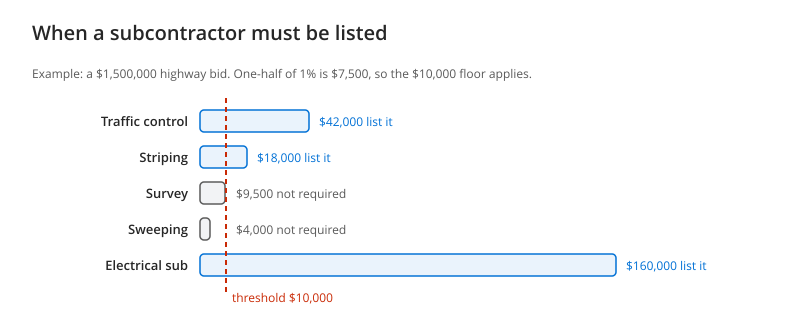

Listing subcontractors
In one sentence: a prime bidding California public works must list in its bid every sub that will do more than a set share of the work, and then use those subs, unless the agency approves a substitution for a reason the law allows.

The threshold
Under Public Contract Code 4104, you list each subcontractor whose work is more than one-half of 1% of your total bid. For streets, highways and bridges, the threshold is one-half of 1% or $10,000, whichever is greater. A specialty sub that fabricates and installs to detailed drawings is listed the same way.
What to write for each sub
- Name and location of its place of business.
- California contractor license number.
- DIR public works contractor registration number.
- The portion of the work it will do. List only one sub per portion.
An inadvertent error in a license or registration number can be fixed within 24 hours after bid opening. Other errors are harder to fix.
If you don't list a sub
For a portion above the threshold with no sub listed, the law treats you as agreeing to do that work yourself, and you can't sublet it later except under the substitution rules.
Substitution after award
You can't replace a listed sub on your own. The agency may consent to a substitution in the situations Public Contract Code 4107 allows, for example when the listed sub:
- refuses to sign a written contract at its bid price and scope;
- goes bankrupt or out of business;
- can't perform or can't provide a bond you required in advance;
- is not licensed or registered as required.
The sub gets notice and the chance to object, and the agency decides.
DBE commitments are separate
On federal-aid jobs, the DBE commitment form is a different document from the subcontractor list, with its own rules for replacing a DBE. See DBE requirements on federal-aid jobs.
Common mistakes / what agencies actually check
- Listing two subs for the same portion "to keep options open", which is not allowed.
- Using a sub you didn't list for a portion above the threshold.
- Substituting a sub without the agency's written consent.